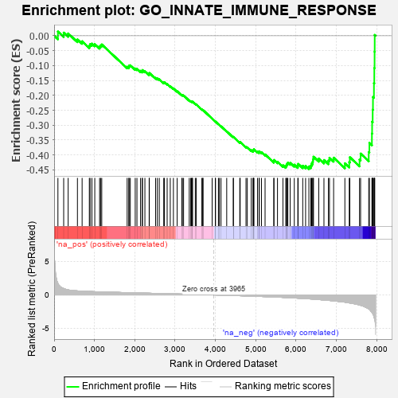
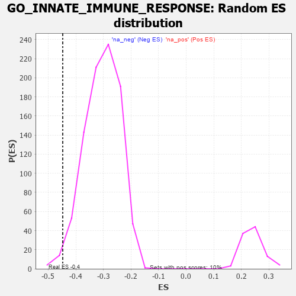

| | | Dataset | 7d |
| Phenotype | NoPhenotypeAvailable |
| Upregulated in class | na_neg |
| GeneSet | GO_INNATE_IMMUNE_RESPONSE |
| Enrichment Score (ES) | -0.4474167 |
| Normalized Enrichment Score (NES) | -1.4686065 |
| Nominal p-value | 0.013348165 |
| FDR q-value | 0.22026709 |
| FWER p-Value | 1.0 |
Table: GSEA Results Summary

Fig 1: Enrichment plot: GO_INNATE_IMMUNE_RESPONSE
Profile of the Running ES Score & Positions of GeneSet Members on the Rank Ordered List
| PROBE | GENE SYMBOL | GENE_TITLE | RANK IN GENE LIST | RANK METRIC SCORE | RUNNING ES | CORE ENRICHMENT | | 1 | UBE2K | | | 94 | 1.739 | 0.0141 | No |
| 2 | DCST1 | | | 237 | 0.959 | 0.0104 | No |
| 3 | CNOT7 | | | 348 | 0.750 | 0.0077 | No |
| 4 | MX1 | | | 578 | 0.604 | -0.0124 | No |
| 5 | XRCC6 | | | 694 | 0.560 | -0.0186 | No |
| 6 | TTC4 | | | 873 | 0.513 | -0.0336 | No |
| 7 | HMGB2 | | | 892 | 0.507 | -0.0283 | No |
| 8 | MATR3 | | | 937 | 0.498 | -0.0264 | No |
| 9 | HMGB4 | | | 1008 | 0.482 | -0.0281 | No |
| 10 | SRC | | | 1128 | 0.459 | -0.0363 | No |
| 11 | PSMD7 | | | 1152 | 0.454 | -0.0325 | No |
| 12 | PSMD2 | | | 1181 | 0.450 | -0.0293 | No |
| 13 | PSMD4 | | | 1811 | 0.335 | -0.1042 | No |
| 14 | TRIM5 | | | 1852 | 0.327 | -0.1044 | No |
| 15 | PSMD6 | | | 1858 | 0.326 | -0.1002 | No |
| 16 | PAK3 | | | 1889 | 0.322 | -0.0992 | No |
| 17 | RAF1 | | | 2011 | 0.303 | -0.1100 | No |
| 18 | IRF4 | | | 2054 | 0.298 | -0.1109 | No |
| 19 | PSME4 | | | 2143 | 0.285 | -0.1178 | No |
| 20 | SYK | | | 2186 | 0.278 | -0.1190 | No |
| 21 | C1QBP | | | 2189 | 0.278 | -0.1151 | No |
| 22 | PSMF1 | | | 2251 | 0.268 | -0.1188 | No |
| 23 | MIF | | | 2357 | 0.252 | -0.1284 | No |
| 24 | SIN3A | | | 2361 | 0.251 | -0.1250 | No |
| 25 | TLR1 | | | 2517 | 0.224 | -0.1414 | No |
| 26 | PSMD5 | | | 2560 | 0.218 | -0.1434 | No |
| 27 | PDE12 | | | 2608 | 0.211 | -0.1462 | No |
| 28 | DDX1 | | | 2718 | 0.196 | -0.1572 | No |
| 29 | CUL1 | | | 2735 | 0.193 | -0.1563 | No |
| 30 | FER | | | 2803 | 0.183 | -0.1621 | No |
| 31 | DAPK3 | | | 2880 | 0.169 | -0.1692 | No |
| 32 | BTK | | | 2958 | 0.156 | -0.1767 | No |
| 33 | ABCE1 | | | 3051 | 0.143 | -0.1862 | No |
| 34 | GCH1 | | | 3166 | 0.127 | -0.1988 | No |
| 35 | PSMD9 | | | 3179 | 0.125 | -0.1985 | No |
| 36 | AP1G1 | | | 3210 | 0.121 | -0.2005 | No |
| 37 | TAB1 | | | 3351 | 0.097 | -0.2168 | No |
| 38 | DDX3X | | | 3388 | 0.091 | -0.2200 | No |
| 39 | MED1 | | | 3405 | 0.089 | -0.2207 | No |
| 40 | TRIL | | | 3428 | 0.087 | -0.2222 | No |
| 41 | SARM1 | | | 3432 | 0.086 | -0.2213 | No |
| 42 | FES | | | 3501 | 0.077 | -0.2288 | No |
| 43 | PQBP1 | | | 3526 | 0.072 | -0.2308 | No |
| 44 | SKP1 | | | 3663 | 0.049 | -0.2474 | No |
| 45 | CD180 | | | 3686 | 0.046 | -0.2495 | No |
| 46 | DHX9 | | | 3693 | 0.044 | -0.2496 | No |
| 47 | IFIH1 | | | 3919 | 0.006 | -0.2781 | No |
| 48 | DDX58 | | | 3998 | -0.007 | -0.2879 | No |
| 49 | ECSIT | | | 4002 | -0.008 | -0.2882 | No |
| 50 | CSF1 | | | 4074 | -0.019 | -0.2969 | No |
| 51 | CHID1 | | | 4099 | -0.023 | -0.2996 | No |
| 52 | CRK | | | 4139 | -0.031 | -0.3041 | No |
| 53 | PSME3 | | | 4280 | -0.056 | -0.3211 | No |
| 54 | SETD2 | | | 4443 | -0.084 | -0.3404 | No |
| 55 | CDC37 | | | 4446 | -0.084 | -0.3394 | No |
| 56 | NUB1 | | | 4604 | -0.119 | -0.3576 | No |
| 57 | GATA3 | | | 4614 | -0.120 | -0.3569 | No |
| 58 | CNPY3 | | | 4758 | -0.149 | -0.3729 | No |
| 59 | SRPK2 | | | 4790 | -0.155 | -0.3745 | No |
| 60 | CLU | | | 4889 | -0.174 | -0.3843 | No |
| 61 | CASP1 | | | 4932 | -0.185 | -0.3869 | No |
| 62 | EP300 | | | 4941 | -0.186 | -0.3851 | No |
| 63 | XRCC5 | | | 4946 | -0.187 | -0.3828 | No |
| 64 | PRKDC | | | 4955 | -0.189 | -0.3810 | No |
| 65 | PDPK1 | | | 5043 | -0.207 | -0.3890 | No |
| 66 | FLNB | | | 5082 | -0.220 | -0.3905 | No |
| 67 | DRD2 | | | 5088 | -0.221 | -0.3878 | No |
| 68 | IPO7 | | | 5142 | -0.236 | -0.3910 | No |
| 69 | DDX21 | | | 5231 | -0.252 | -0.3984 | No |
| 70 | LYST | | | 5448 | -0.307 | -0.4213 | No |
| 71 | FRK | | | 5451 | -0.307 | -0.4170 | No |
| 72 | PCBP2 | | | 5539 | -0.331 | -0.4231 | No |
| 73 | PSMD1 | | | 5674 | -0.367 | -0.4346 | No |
| 74 | MX2 | | | 5745 | -0.390 | -0.4377 | No |
| 75 | TLR2 | | | 5761 | -0.395 | -0.4336 | No |
| 76 | VAMP7 | | | 5777 | -0.399 | -0.4296 | No |
| 77 | LAMP1 | | | 5796 | -0.404 | -0.4258 | No |
| 78 | TKFC | | | 5854 | -0.419 | -0.4268 | No |
| 79 | PRDM1 | | | 5956 | -0.457 | -0.4328 | No |
| 80 | VAMP3 | | | 6043 | -0.487 | -0.4364 | No |
| 81 | EVL | | | 6052 | -0.490 | -0.4301 | No |
| 82 | EGR1 | | | 6165 | -0.527 | -0.4364 | No |
| 83 | CDC42 | | | 6236 | -0.548 | -0.4371 | No |
| 84 | NCAM1 | | | 6318 | -0.582 | -0.4387 | Yes |
| 85 | BIRC3 | | | 6366 | -0.603 | -0.4356 | Yes |
| 86 | ISG15 | | | 6385 | -0.608 | -0.4288 | Yes |
| 87 | MBL2 | | | 6411 | -0.623 | -0.4226 | Yes |
| 88 | RAB43 | | | 6419 | -0.628 | -0.4141 | Yes |
| 89 | MALT1 | | | 6432 | -0.634 | -0.4061 | Yes |
| 90 | OTOP1 | | | 6562 | -0.690 | -0.4122 | Yes |
| 91 | PAK1 | | | 6691 | -0.757 | -0.4171 | Yes |
| 92 | KYNU | | | 6802 | -0.816 | -0.4189 | Yes |
| 93 | LYAR | | | 6828 | -0.830 | -0.4096 | Yes |
| 94 | LRP8 | | | 6931 | -0.889 | -0.4093 | Yes |
| 95 | MPEG1 | | | 7210 | -1.083 | -0.4284 | Yes |
| 96 | GRN | | | 7319 | -1.194 | -0.4242 | Yes |
| 97 | CYLD | | | 7333 | -1.206 | -0.4078 | Yes |
| 98 | NLRC3 | | | 7574 | -1.515 | -0.4156 | Yes |
| 99 | ELF4 | | | 7600 | -1.551 | -0.3956 | Yes |
| 100 | MUC2 | | | 7802 | -2.066 | -0.3901 | Yes |
| 101 | TRAF6 | | | 7818 | -2.157 | -0.3597 | Yes |
| 102 | FYN | | | 7881 | -2.622 | -0.3283 | Yes |
| 103 | TRAF3 | | | 7886 | -2.695 | -0.2884 | Yes |
| 104 | MUC19 | | | 7900 | -2.797 | -0.2481 | Yes |
| 105 | PSMD3 | | | 7907 | -2.887 | -0.2056 | Yes |
| 106 | PSMD8 | | | 7931 | -3.286 | -0.1593 | Yes |
| 107 | MRC1 | | | 7940 | -3.475 | -0.1082 | Yes |
| 108 | XIAP | | | 7947 | -3.696 | -0.0535 | Yes |
| 109 | DAPK1 | | | 7950 | -3.767 | 0.0027 | Yes |
Table: GSEA details [plain text format]

Fig 2: GO_INNATE_IMMUNE_RESPONSE: Random ES distribution
Gene set null distribution of ES for GO_INNATE_IMMUNE_RESPONSE